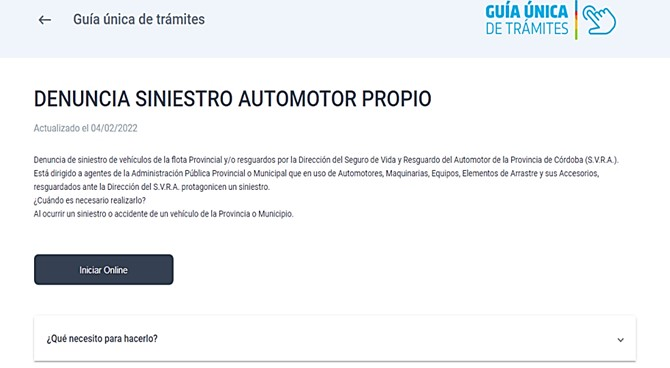

Instructivo para presentacion en el C.I.D.I

Pasos y Procedimientos
1. AL INGRESAR EL USUARIO (CUIL) Y CONTRASEÑA EN EL SITIO WEB O APLICACIÓN DE CIUDADANO DIGITAL,INDICAR EN LA PLANTILLA DE BUSCADOR QUE SE ENCUENTRA EN LA PAGINA INICIAL, “DENUNCIA SINISESTRO AUTOMOTOR PROPIO”:
2. UNA VEZ INGRESADO, CLIQUEAR EL INDICADOR “INICIAR ONLINE”:
A. EN LA PLANTILLA “INICIADOR” RELLENAR LOS CAMPOS OBLIGATORIOS CON LOS DATOS PERSONALES DEL CHOFER DEL MOVIL AL MOMENTO DEL SINIESTRO Y CLIQUEAR EL INDICADOR “SIGUIENTE”:
B. EN LA PLANTILLA “DENUNCIA SINIESTRO” RELLENAR LOS CAPOS OBLIGATORIOS CON LOS DETALLES QUE INDICA LA IMAGEN:
* NOTA: EN EL INDICADOR “SEARCH” (EN SITIO WEB) O EN “LUPA” (EN APLICACIÓN), PULSAR SIEMPRE UNA VEZ SE COLOQUEN LOS DATOS CORRESPONDIENTES, PARA QUE EL SISTEMA BUSQUE DE MANERA CORRECTA LO APUNTADO, EJ: BARRIO, Nº CUIL.
EN EL INDICADOR DE COLOR AZUL, PULSAR PARA ADJUNTAR IMAGEN DE CROQUIS DEL SINIESTRO Y LUEGO DE LLENAR TODOS LOS CAMPOS CORRECTAMENTE PULSAR EN “SIGUIENTE”:
C. EN LA PLANTILLA “DAÑOS Y LESIONES” RELLENAR LOS CAPOS OBLIGATORIOS CON LOS DETALLES QUE INDICA LA IMAGEN (TENER EN CUENTA QUE SE DEBEN COMPLETAR LOS DATOS DE TODAS LAS PERSONAS LESIONADAS EN EL HECHO ). EN EL CASO QUE LA CANTIDAD SEA MAYOR A LA DE UNA PERSONA, PULSAR EL INDICADOR “AGREGAR”:
* NOTA: EN EL INDICADOR “SEARCH” (EN SITIO WEB) O EN “LUPA” (EN APLICACIÓN), PULSAR SIEMPRE UNA VEZ SE COLOQUEN LOS DATOS CORRESPONDIENTES, PARA QUE EL SISTEMA BUSQUE DE MANERA CORRECTA LO APUNTADO, EJ: BARRIO, Nº CUIL.
EN EL CAMPO “DAÑOS A TERCEROS” COMPLETAR SOLAMENTE LOS DATOS DEL TERCERO EN CUESTION:
D. EN LA PLANTILLA “DEMORA EN DENUNCIA” RELLENAR LOS CAPOS OBLIGATORIOS CON LOS DETALLES QUE INDICA LA IMAGEN:
* NOTA: EL TIEMPO DE ENTREGA DEL TRAMITE DE SINIESTRO PARA LAS DEPENDENCIAS DEL AMBITO CAPITAL SON DE 5 DIAS CORRIDOS, Y PARA LAS DEPENDENCIAS DEL AMBITO INTERIOR 10 DIAS CORRIDOS.
E. EN LA PLANTILLA “ANEXOS” PULSAR EN LOS TRES INDICADORES DEL LATERAL IZQUIERDO DE COLOR AZUL PARA ADJUNTAR IMÁGENES DE LA DOCUMENTACION CORRESPONDIENTE:
F. EN LA PLANTILLA “CONFIRMACION” INDICARA TODOS LOS DATOS APORTADOS EN LOS PASOS ANTERIORES, EN EL CASO QUE TODO LO EXPUESTO SEA CORRECTO, PULSAR EN “CONFIRMAR” QUE SE ENCUENTRA AL FINAL DE LO CITADO, PARA QUE EL TRAMITE DE SINIESTRO SE ENVIE DE MANERA EXITOSA: